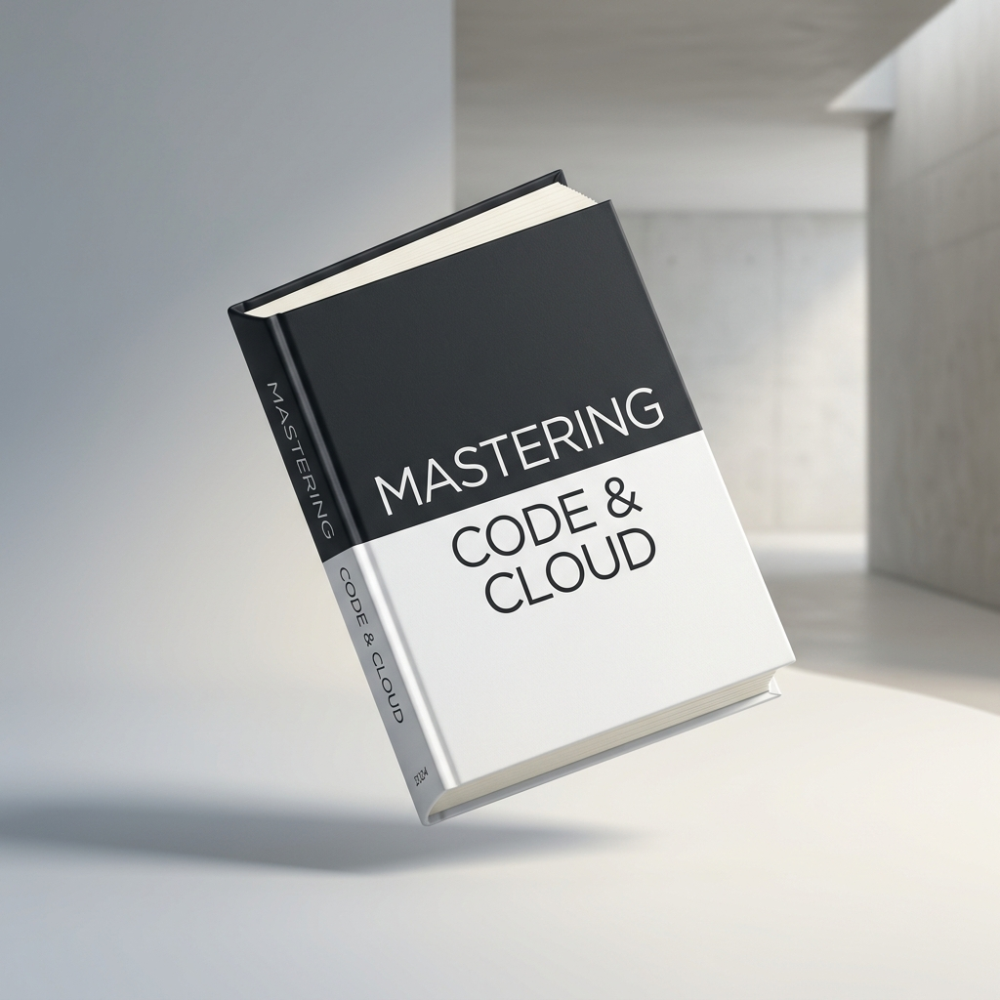

Domina el código, la nube y la arquitectura moderna
Una guía exhaustiva, elegante y 100% práctica creada para ingenieros y profesionales que buscan construir sistemas escalables y recuperar el control de su tiempo.

Aprende lo que verdaderamente importa en producción
Olvídate de manuales densos llenos de teoría obsoleta. Este libro condensa años de experiencia resolviendo cuellos de botella reales en infraestructuras de misión crítica.
-
Patrones de Arquitectura Limpia & Serverless: Diseña sistemas desacoplados, tolerantes a fallos y económicos de operar.
-
Automatización y Flujos de Trabajo: Elimina tareas manuales repetitivas con pipelines CI/CD y despliegues sin fricción.
-
Productividad Sostenible: Hábitos clave para entregar proyectos a tiempo sin caer en el agotamiento profesional.
Explora los capítulos clave
Cada capítulo incluye explicaciones claras, diagramas de arquitectura y ejemplos de código listos para implementar.
Introducción al Desarrollo Moderno & Arquitectura Ágil
Establecemos los cimientos de la ingeniería moderna: cómo estructurar proyectos para que sean comprensibles hoy y mantenibles dentro de 5 años. Comprenderás la diferencia fundamental entre complejidad accidental y esencial.
Puntos Clave del Capítulo:
Recupera tu Tiempo: Automatización y Serverless
Aprende a delegar en la infraestructura gestionada todo el peso operativo que antes consumía horas de guardia: despliegues continuos, funciones efímeras y observabilidad automatizada.
Puntos Clave del Capítulo:
Trabaja Menos, Haz Más: El Enfoque del 80/20
Descubre cómo identificar el 20% de las decisiones de diseño que generan el 80% del valor para los usuarios y la estabilidad de la plataforma, evitando reescrituras innecesarias.
Puntos Clave del Capítulo:
Delegar y Escalar: Microservicios y Sistemas Distribuidos
Manejo de estados, consistencia eventual y contratos de API resilientes. Un desglose realista de cuándo adoptar microservicios y cuándo un monolito modular sigue siendo tu mejor aliado.
Puntos Clave del Capítulo:
Hábitos de Alto Rendimiento para Profesionales
Cierra con una metodología de trabajo diaria: gestión de bloques de concentración, revisión de código constructiva y aprendizaje continuo en un ecosistema tecnológico que nunca se detiene.
Puntos Clave del Capítulo:

Prof. Sophia Vance
Arquitecta de Software, Investigadora & Mentora Tecnológica
Con más de una década y media liderando transformaciones tecnológicas en startups de rápido crecimiento y multinacionales, Sophia ha dedicado su carrera a democratizar el conocimiento de ingeniería de alto nivel.
Ha asesorado a cientos de desarrolladores en más de 20 países y sus publicaciones sobre patrones de diseño y escalabilidad son referencia habitual en comunidades técnicas globales.
Lo que dicen quienes ya lo han leído
Opiniones sinceras de desarrolladores, diseñadores y directores de ingeniería de todo el mundo.
"Rara vez un libro técnico logra un equilibrio tan perfecto entre rigor conceptual y aplicabilidad inmediata. Las explicaciones sobre arquitectura limpia transformaron la forma en que estructuro componentes y APIs."
"El capítulo sobre automatización y reducción de tareas manuales nos ahorró decenas de horas de trabajo este trimestre. Directo al punto, sin relleno y con ejemplos reales que funcionan en el mundo corporativo."
"Se lo he recomendado a todo mi equipo de desarrollo. La claridad con la que aborda la gestión de la deuda técnica y los hábitos de entrega continua es simplemente brillante. Una lectura obligada."
Obtén tu copia gratuita
Elige tu formato preferido y recibe los primeros capítulos y ejemplos de código directamente en tu correo.
¿Tienes preguntas o propuestas?
¿Quieres organizar un taller para tu equipo o necesitas licencias corporativas? Nuestro equipo responderá en menos de 24 horas.